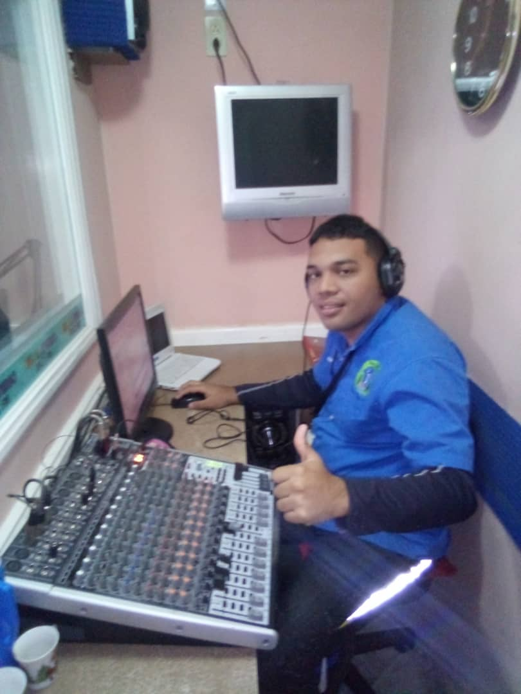

Luis Maestre
Cordinador:Luis Maestre, edad:27, nativo de San José de Guanipa, especialidad:editor de audio, años de experiencia:5 años

Jessica Bolivar
Operadora:Jessica Bolivar, edad:28, nativa de San José de Guanipa, especialidad:editor de audio, años de experiencia:2 años
Daniel Veracierta
Operadora:Daniel Veracierta, edad:26, nativo de San José de Guanipa, especialidad:editor de audio, años de experiencia:1 año